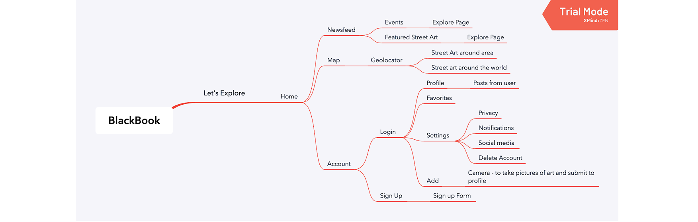
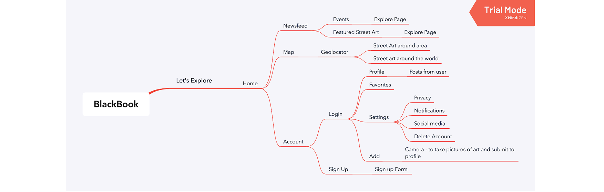
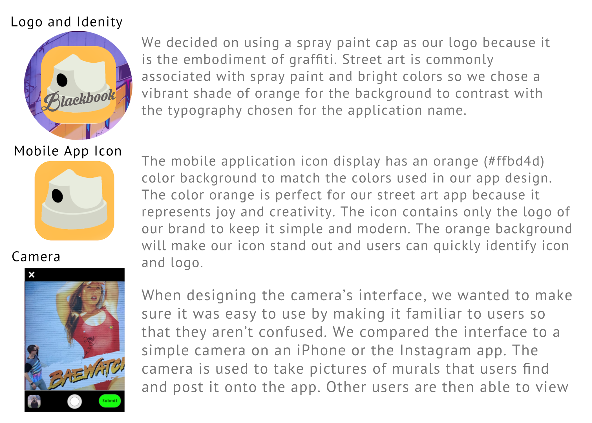
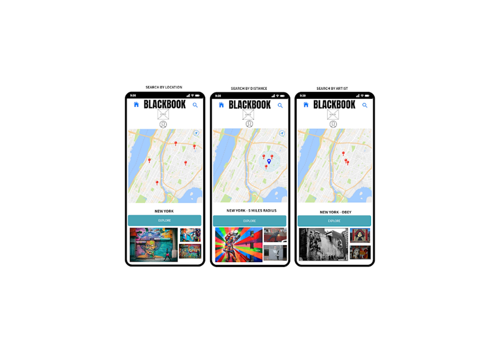

What is BlackBook?
BlackBook is a street art finder App that was developed by four University of Central Florida students during fall 2019. The app was developed through user centered design practices, methods, and techniques to ensure user experience is achieved in the software design process.
The Market
What Makes Us Different? Our App will be free of charge and users will have the option to create a peronsal account. We offer digital galleries with high quality images and physical location.
So How Will We Make Profit?App monetization will include advertising similar to how instagram make their profit.
Primary Users
 

The Design

Blackbook’s color scheme is simple with a few pops of color so that the murals featured on the app can stand out and speak for themselves. The color scheme is simple yet modern. The Orange yellow (#ffdb4d) is used for our icon. Orange and yellow are associated with joy, enthusiasm, and happiness.
 User Evaluation
-
Feedback
- User thinks that the colors can be distracting
- Add a terms and condition tab on the settings page Lessons and Solutions
- Create a different and more functional upload button
- Each image on favorites and posts page should be clickable
- Less gradient style color and more earthy tones (gray format) on the navigation screen